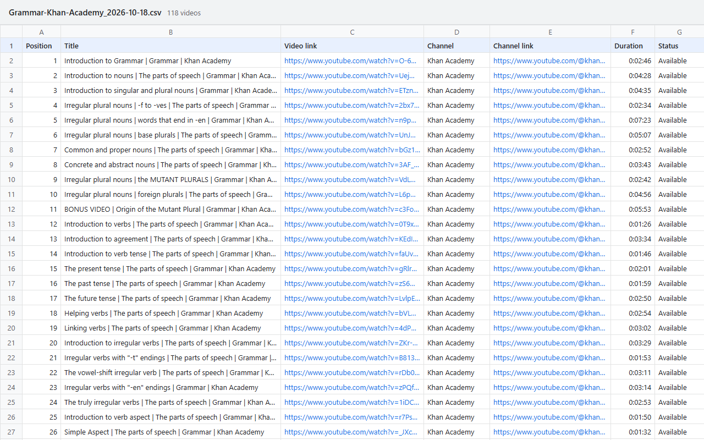
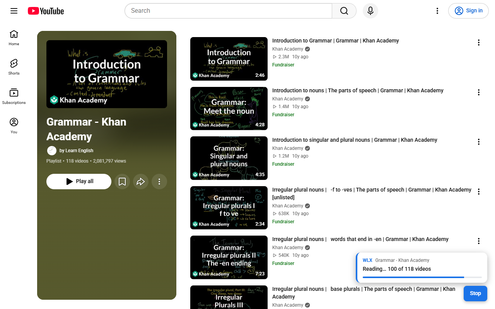
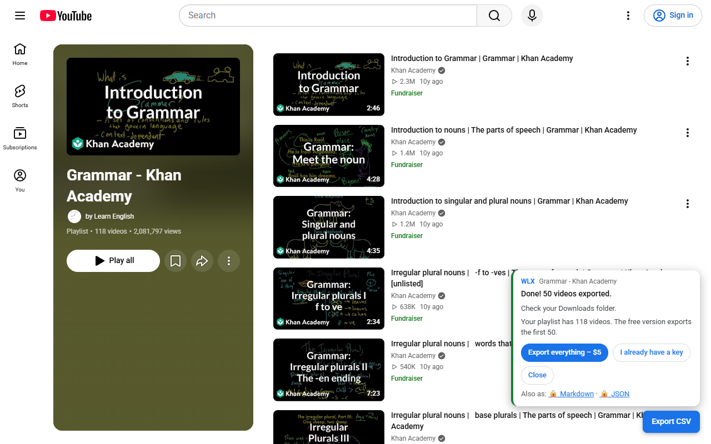

Export your YouTube Watch Later list to a spreadsheet
YouTube has no export button for Watch Later, and its official API returns that list empty. WLX is an add-on for Firefox and Microsoft Edge that saves your Watch Later list and any playlist to a CSV file in one click: title, channel, duration and link of every video.
Free, for Firefox and Edge on desktop. No account, no sign-up, no server.

How to export your Watch Later list
It takes less than a minute, even for thousands of videos. You don't need to scroll down the list.
-
Install WLX
Get it free from Firefox Add-ons or Microsoft Edge Add-ons.

-
Open the list on YouTube
Go to your Watch Later list (signed in) or any playlist, and click Export CSV in the bottom-right corner.

-
Open the file
The CSV goes to your Downloads folder. It opens in Excel, Google Sheets or LibreOffice, with accents and special characters intact.

Why people use WLX
Your list, in a file you keep
Hundreds of saved videos become a spreadsheet you can sort, search, share or keep as a backup.
Deleted and private videos too
Unavailable videos are included and marked, so you see what is missing instead of a silent gap.
"What disappeared?"
Export again later and WLX tells you which videos became unavailable since last time. Pro shows the title and channel they had.
Backup of all your playlists
On your YouTube "Playlists" page, Export all saves your playlists in a single .zip file.
Free and Pro
The free version works without limits on time. Pro is a one-time payment, with no subscription.
Free
$0
- Playlists and liked videos: up to 50 videos each, in CSV
- Watch Later: a sample of the first 10 videos
- Backup: the first 3 playlists
- "What disappeared?": how many videos became unavailable
WLX Pro
$5 one-time
- No limits: full playlists and your whole Watch Later list
- Markdown and JSON, besides CSV
- A status column (available, unavailable)
- "What disappeared?" with the title and channel a video had before
- Backup of all your playlists
- One key works on up to 3 browsers
Pro is sold on Gumroad. Refund within 14 days if it doesn't work for you.
Questions
Does WLX download videos?
No. WLX does not download videos or music, and it does not touch ads. It only exports the list: title, channel, duration, link and availability.
Do I need to sign in or create an account?
There is no WLX account. WLX uses the YouTube session already open in your browser, so you only need to be signed in to YouTube to export Watch Later and liked videos. Public playlists work without signing in.
Is my data sent anywhere?
No. The file is created in your browser and saved on your computer. The only thing ever sent is your license key, to Gumroad, if you activate Pro. See the privacy policy.
What about Google Takeout?
Takeout exports your Google data in bulk, and the archive can take a while to be ready. WLX exports the list you are looking at, right away, straight to a spreadsheet.
How long does it take?
About a second per 100 videos. A list of 5,000 videos takes under a minute, with progress on screen and a Stop button.
Which browsers does it work on?
Firefox (version 140 or newer) and Microsoft Edge, on desktop. It does not work on phones.
How do I activate Pro?
- Buy WLX Pro on Gumroad. Your license key arrives right after payment.
- Click the WLX icon in the browser toolbar, then Activate Pro.
- Paste the key and click Activate. In Firefox, a prompt asks for permission to send the key to Gumroad: click Allow.
Why do I only see 5,000 liked videos?
YouTube itself only shows and counts the 5,000 most recent liked videos. WLX tells you when a list reaches that number.
Support
Something not working, or a key that won't activate? Write to wlx.exporter@gmail.com. Tell me the playlist link (if it's public) and what you see on screen.
If the button doesn't show up on YouTube, open about:addons in Firefox, click WLX, open Permissions and check that access to www.youtube.com is on. In Edge, open edge://extensions, click Details under WLX and check Site access. Then reload the YouTube page.
Privacy policy
Last updated: November 14, 2026
What WLX reads
When you click to export, WLX reads the list of videos of the YouTube playlist you opened (title, channel, duration, link and availability), using the YouTube session already open in your browser. It does not read anything else.
Where your data goes
The exported file is created in your browser and saved on your computer. WLX has no server and does not receive your playlists.
What is stored on your computer
- For "What disappeared?": a compact list of the videos you exported from each playlist (video ID, title, channel and date), so WLX can tell what became unavailable later.
- If you activate Pro: your license key and the date it was last checked.
This stays in the add-on's storage on your computer and is deleted when you remove the add-on.
What is sent to others
Only your license key, and only if you activate Pro: it is sent to Gumroad (api.gumroad.com), the store that sells the license, when you activate it and about once a day while you use WLX, to check that it is still valid. In Firefox, the browser asks for your permission before the first time. Gumroad's answer includes purchase details; WLX keeps only whether the key is valid. See Gumroad's privacy policy.
What WLX never does
No analytics, no tracking, no ads, and no selling or sharing of data. This page has no cookies or trackers either.